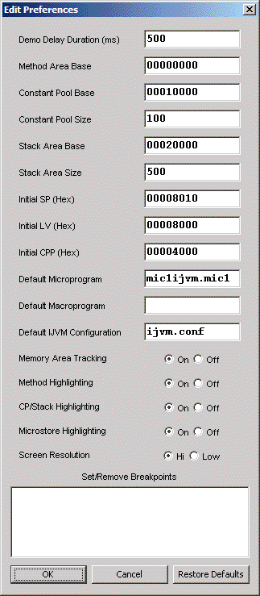

- Demo Delay
- Length in milliseconds for execution delay when
Delay is enabled on the control panel; see
Commands.
- Method Area Base
- Base address of the Method area of memory.
- Constant Pool Base
- Base address of the Constant Pool area of
memory.
- Constant Pool Size
- Number of bytes of Constant Pool actually
represented in the simulator. This is generally much smaller than the
virtual address space.
- Stack Area Base
- Base address of the Stack area of memory.
- Stack Size
- Number of bytes of Stack actually
represented in the simulator. This is generally much smaller than the
virtual address space.
- Initial SP
- Initial value of the SP register in hexidecimal.
- Initial LV
- Initial value of the LV register in hexidecimal.
- Initial CPP
- Initial value of the CPP register in hexidecimal.
|
|
 |
|
- Default Microcode Program
- Microcode
program loaded on startup.
- Default Macrocode Program
IJVM program
loaded on startup.
- Memory Area Tracking
- When enabled causes automatic memory
scrolling to areas of activity (except at Prog speed; see
Commands).
- Method Highlighting
- When enabled highlights current IJVM
instruction (except at Prog speed).
- CP/Stack Highlighting
- When enabled highlights activity in
Constant Pool and Stack (except at Prog speed).
- Microstore Highlighting
- When enabled highlights and tracks
activity in open Microstore window (at Subclock or Clock speed only).
- Screen Resolution
- Hi Resolution is intended for systems with
screen resolution of 1280 x 960 or higher. Use Low Resolution on
systems with lower screen resolution.
- Set/Remove Breakpoints
- List IJVM breakpoints to be used
during Prog-level runs; see Commands.
|